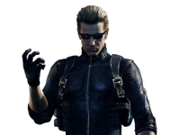
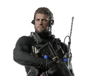
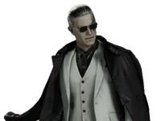

-
Leon Scott Kennedy
«Я сотру этот вирус с лица земли». -

Albert Wesker«С каждым днём человечество всё ближе к самоуничтожению. Я не уничтожаю мир, я спасаю его!» -
Ada Wong
«Это секрет.» -

Chris Redfield«Я не могу бегать от самого себя. Я должен признать правду, принять ответственность. Только так я смогу вспомнить. Только так смогу вернуть свою жизнь.» -
Grace Ashcroft
«Я больше не хочу ни о чём сожалеть. Что бы ни потребовалось — рассчитывайте на меня.» -
Sherry Birkin
«Я больше не хочу быть одна.» -

Zeno«Иногда самый сильный ход — не делать ход вообще.» -
Claire Redfield
«Мы зделаем это!.»
-
Леон Скотт Кеннеди — американец итальянского происхождения, в настоящее время работающий федеральным агентом в Отделе операций по обеспечению безопасности, контртеррористическом агентстве, находящемся под прямым контролем президента США. Леон — один из немногих выживших в инциденте Раккун-Сити 1998 года, тогда он был офицером полиции. После тех событий Кеннеди вынужденно присоединился к сверхсекретному военному агентству при USSTRATCOM, занимающемся борьбой с биоорганическим оружием. Он служил в нём до 2011 года, участвуя в неоднократных операциях по всему миру. -
Альберт Вескер — умный, властолюбивый и невероятно коварный человек, который жаждал силы и власти над всем миром. До этого был сотрудником корпорации «Амбрелла» и считался в ней одним из самых многообещающих исследователей. Параллельно с этим работал под прикрытием как один из офицеров полиции Раккун-Сити и глава спецподразделения STARS. -
Ада Вонг — псевдоним спецагента, специализирующегося на шпионаже. Об этой женщине практически ничего неизвестно. Отличается уникальными физическими данными, сильным характером и острым умом. Нередко она предавала нанимателей, чтобы достигнуть своих «истинных целей», которые до сих пор остаются загадкой. Имеет тягу к красному цвету, что прослеживается на протяжении всей франшизы. -
Крис Редфилд — американский солдат, бывший военный пилот. Капитан отряда "Альфа" североамериканского отделения B.S.A.A. -
Грейс Эшкрофт — технический аналитик в ФБР и приёмная дочь Алиссы Эшкрофт, журналистки и выжившей в Раккун-Сити. -
Шерри Биркин— американский федеральный агент Отдела операций по безопасности (DSO), дочь Уильяма и Аннет Биркин, учёных, работавших в корпорации «Амбрелла». Будучи ребёнком, пережила вспышку Т-вируса в Раккун-Сити осенью 1998 года. В ходе инцидента была заражена G-вирусом, но выжила благодаря Клэр Редфилд, которая вовремя ввела ей вакцину. Вследствие этого у неё появилась способность к регенерации. -
Зено — высокопоставленный член преступного синдиката «Соединения». Он сотрудничал с Виктором Гидеоном, бывшим исследователем корпорации «Амбрелла», в деле по заполучению «Элписа», который по их предположениям был передовым вирусом, разработанным Спенсером. -
Клэр Редфилд — сотрудница правозащитной организации TerraSave. Младшая сестра Криса Редфилда, оперативника и одного из основателей BSAA, ранее служившего в STARS. С тех пор как Клэр пережила инцидент в Раккун-Сити в 1998 году, она вновь оказалась в эпицентре нескольких вспышек биологической опасности, что побудило её, как и Криса, посвятить свою жизнь борьбе с биоорганической угрозой.